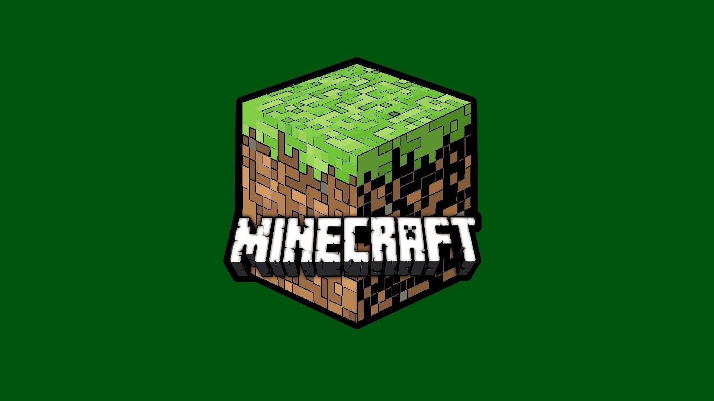

Games OST
Music alone it's good but combine with visual media it's even better. A lot of games although fun would lack something if they didn't have music. Examples such as Minecraft or Omori are games that manages to capture a feeling or create an atmosphere with music but how do they do this?
Minecraft's Ost
When it comes to this amzaing game, one aspect it shines for, it's for its music. The game itself is all about creativity, doind wathever you desire in an endless realm. Songs such as "Minecraft" and "Living Mice" are songs that reflects the melancholy and solitute of the game. While other songs like "Subwoofer Lullaby" or "Haggstrom" sound more upbeated reflecting the fun you can have in the game while still keeping the minimalistic feel. Now if you haven't played the game, and you're curious about how the game's ost sound, there's a link below that'll direct you the album on spotify, enjoy!

OMORI's OST
Omori's music is a little different than minecraft, but still good as it is. You start the game with the title screen which has the "Title" song as background music. It only last 37 seconds but it works as a leitmotif, (recurring theme throughout a musical compostition related to an idea/person/situation) that eventually will hold a bigger meaning to the game. The next tracks: "White Space", "Lost at a Sleepover", and "By Your Side", serve to create a safe atmosphere to what it seems to be a "childlike and sweet" game. As the game progresses, you start to understand that this is more than an rpg adventure game, and that there's more behind it. Songs such as "Acrophobia", "Fade", and "Something, Alone" are songs that perfectly represents the main character's true feelings, showing that this games is more darker than it appears to be. The game explores this "dreamworld" created by the protaganist, and as the game advances it gives us a glimpse of his mentality, opening new areas everytime the protaganist feels a change; "fleur" a song played in an area called "black space" helps set the mood of this despair, anxious part of his world, that induces many players to get done with the task as soon as possible. The song which translated would be "flower" seems to be associated to another important character who likes flowers, furthermore giving this misteryous, scary vibe about them. The closer we get to the truth (what the game is about) the more darker it gets, playing songs such as "Remembrance." which also carries the main leitmotif, "OMORI" and "Try Again Little Brother" which helps the main character get through the climax. The truth is finally revealed; a heartbreaking emotional song ("Duet") plays which uses the main leitmotif and gives the sense of "everything makes sense now" which mentally pains the players. A really beautiful game that manages to tell an emotional story, and manages teach a final lesson about family, friends and trauma. Not forgetting the awesome bangers this games have, some of my favorites are "World's End Valentine", "My time", "It means Everything" and "Duet". Here's the OST of the game, which is very long, but fun to get through.
Instruments
Instruments are a great way to show your love for music, personally I like the piano, but there's a variety of instruments you can play. If you enjoy this topic you'll perhaps enjoy my article about it, come check it out!
Previous PageRandom
Life gets overwhelming, and many times you may want to give up. This is what I feel a lot of the times, but there's things about life that makes me want to continue, like "Music". I think everything related to arts captivate my interest and give me a reason to be happy so even though i'm getting a little sidetrack, there's things in life that are awesome, so if you're interested, perhaps you should take a look to the next page.
Next Page